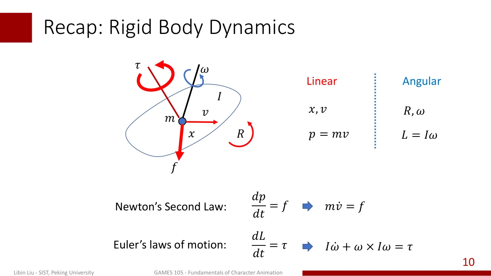
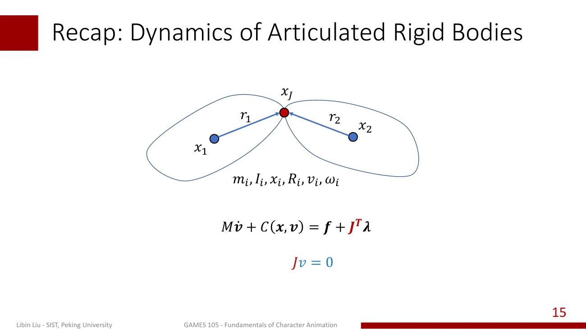
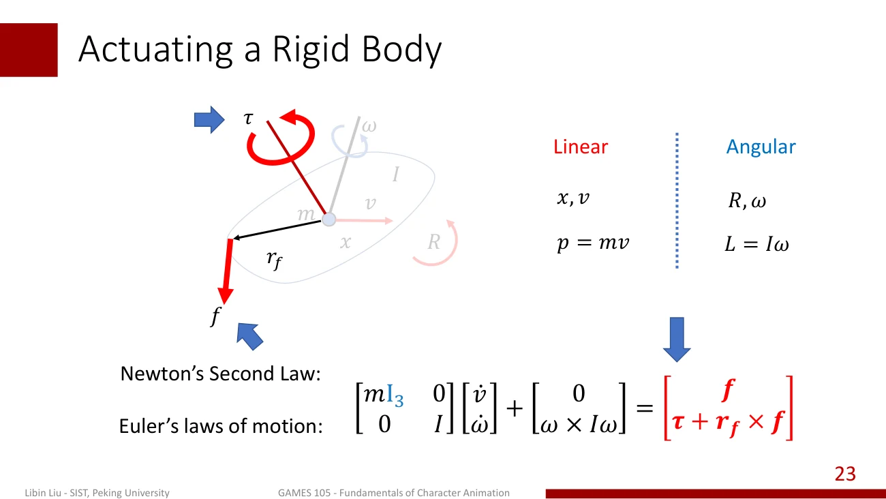
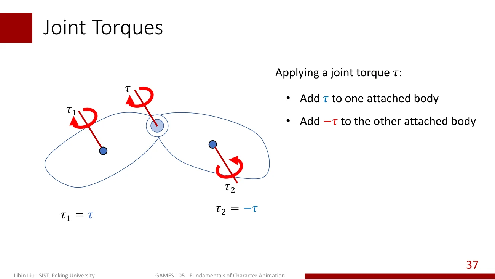
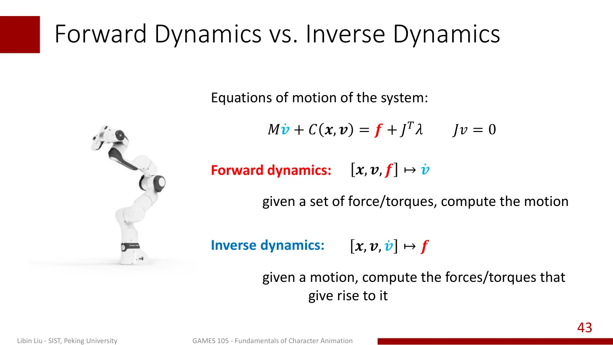
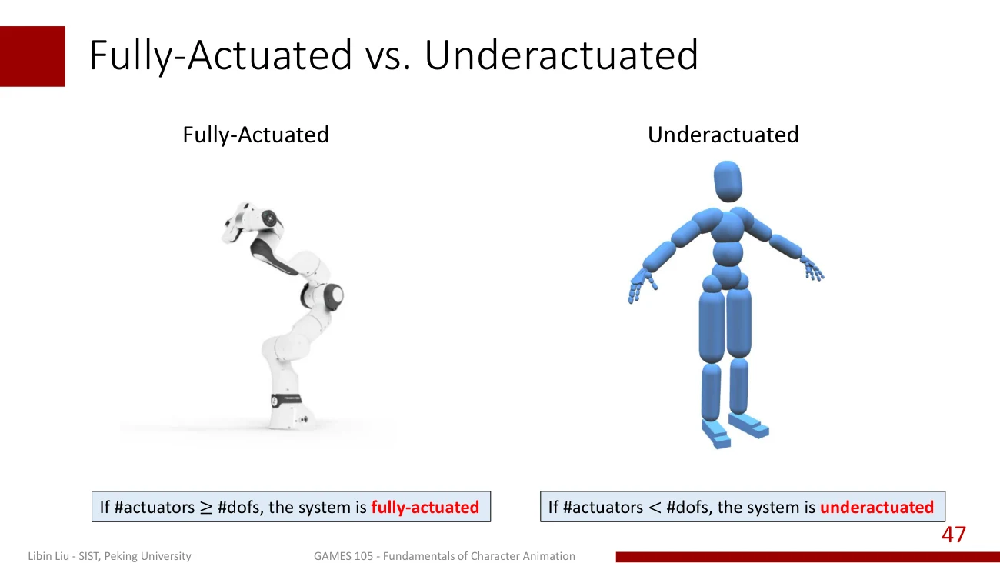
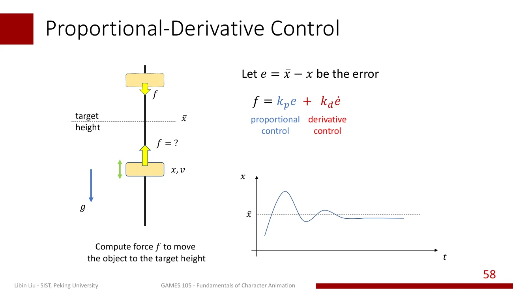
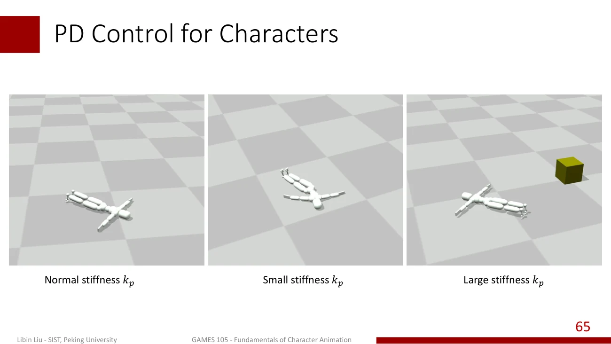
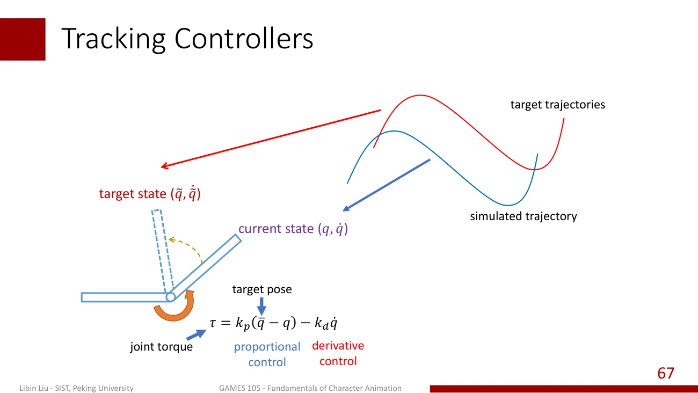
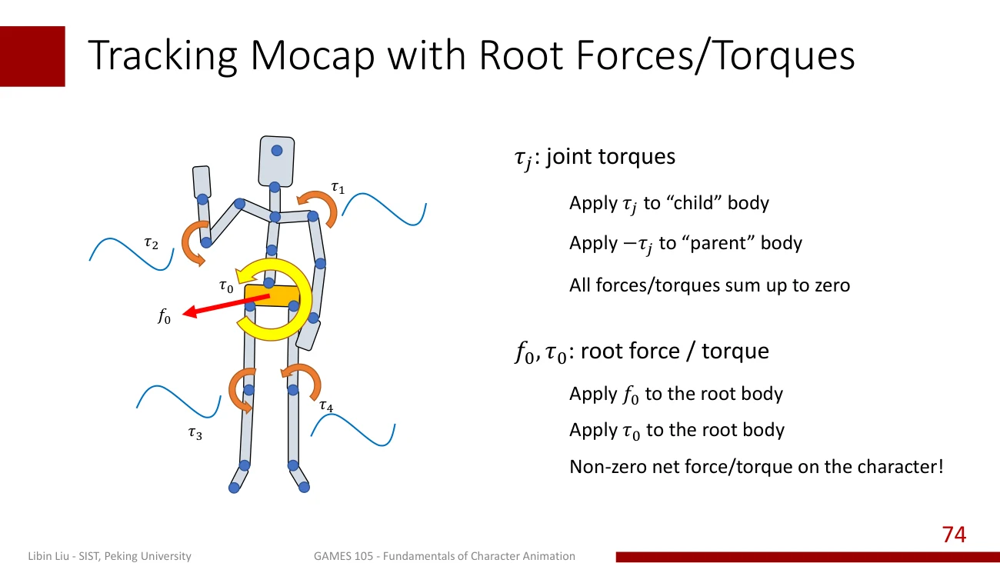

第 9 讲：驱动仿真角色——关节力矩与 PD 控制
让物理仿真中的角色动起来：从刚体动力学到关节力矩，再到 PD 控制器
◆ 学完这一讲，你应该能
理解刚体与关节系统的动力学方程，知道如何用关节力矩驱动机器人/角色
掌握前向动力学与逆向动力学的区别，理解欠驱动系统的概念
能写出 PD 控制律并分析其稳态误差、刚度与阻尼的作用
了解 PD 控制在角色动画中的应用：姿态控制、轨迹跟踪、运动捕捉跟踪
核心结论速记
刚体动力学由牛顿-欧拉方程描述：线动量变化率等于外力，角动量变化率等于外力矩。
关节力矩是作用在关节上的内部力矩，施加时对子刚体加 τ，对父刚体加 -τ，系统总力矩为零。
前向动力学：已知力/力矩求运动；逆向动力学：已知运动求力/力矩。
欠驱动系统：执行器数量少于自由度，无法任意产生所有运动。
PD 控制律：f = kp * e + kd * ė，其中 e = 目标状态 - 当前状态；比例项消除误差，微分项抑制振荡。
PD 控制存在稳态误差，增大 kp 可减小误差但可能导致不稳定。
角色动画中常用 PD 控制跟踪目标姿态或轨迹，通过调整刚度和阻尼来改变运动风格。
011. 从质点、刚体到关节系统：动力学回顾
这一讲的主题是「驱动仿真角色」（Actuating Simulated Characters），即在物理仿真中让角色产生运动。在讲驱动之前，课件先快速回顾了刚体动力学的基础，因为驱动本质上就是给系统施加力或力矩。
质点动力学：牛顿第二定律 \( \mathbf{f} = m\dot{\mathbf{v}} \)，即力等于质量乘以加速度。动量 \( \mathbf{p} = m\mathbf{v} \)，其变化率等于外力。
刚体动力学：刚体除了平动还有转动。线动量 \( \mathbf{p} = m\mathbf{v} \)，角动量 \( \mathbf{L} = I\boldsymbol{\omega} \)，其中 \( I \) 是惯性张量，\( \boldsymbol{\omega} \) 是角速度。欧拉方程给出：\( I\dot{\boldsymbol{\omega}} + \boldsymbol{\omega} \times I\boldsymbol{\omega} = \boldsymbol{\tau} \)，其中 \( \boldsymbol{\tau} \) 是外力矩。
关节系统：多个刚体通过关节连接，形成树状结构。整个系统的运动方程可以写成 \( M\dot{\mathbf{v}} + C(\mathbf{x},\mathbf{v}) = \mathbf{f} + J^T\boldsymbol{\lambda} \)，其中 \( M \) 是质量矩阵，\( C \) 包含科里奥利力、离心力等，\( \mathbf{f} \) 是外部力/力矩，\( J^T\boldsymbol{\lambda} \) 是关节约束力。同时满足约束方程 \( J\mathbf{v} = 0 \)。
仿真循环：给定当前状态，通过碰撞检测、约束处理、构建并求解运动方程，更新速度和位置，得到下一状态。这就是物理引擎（如 PhysX、Bullet）的核心流程。


补充说明
本节的公式是后续驱动的基础，务必理解各符号含义。
常见坑
惯性张量未考虑世界坐标系旋转 → 角动量计算错误 → 需用 R I R^T 转换到世界系。
忽略科里奥利力项 C → 高速旋转时运动失真 → 在仿真中必须包含。
UE / Unity 落地
UE 的物理引擎 Chaos 内部求解类似的方程，但用户通常不直接接触；Unity 的 PhysX 也封装了这些计算。
在 UE 中，刚体的质量、惯性张量可在物理资产中设置，影响仿真行为。
022. 如何驱动一个刚体：力与力矩
要让一个刚体运动，需要施加力（force）或力矩（torque）。对于单个刚体，线运动由力 \( \mathbf{f} \) 驱动，角运动由力矩 \( \boldsymbol{\tau} \) 驱动。
但力矩如何产生？有两种方式：
- 直接施加纯力矩 \( \boldsymbol{\tau} \)（例如电机转子）。
- 在刚体上某点施加力 \( \mathbf{f} \)，产生力矩 \( \boldsymbol{\tau} = \mathbf{r} \times \mathbf{f} \)，其中 \( \mathbf{r} \) 是从质心到作用点的向量。
对于关节系统，驱动来自关节力矩（joint torque）。关节力矩是作用在关节上的内部力矩，它不改变系统的总动量，但改变各刚体之间的相对运动。
如何施加关节力矩：假设关节连接父刚体 A 和子刚体 B，关节力矩 \( \tau \) 沿关节轴。施加时：
- 对子刚体 B 施加 \( +\tau \)；
- 对父刚体 A 施加 \( -\tau \)。
这样系统总力矩为零，符合内部力的性质。在运动方程中，关节力矩作为广义力出现，通过雅可比转置映射到关节空间。


常见坑
关节力矩方向弄反 → 关节向相反方向运动 → 检查父子关系，通常对子刚体加正力矩。
将关节力矩当作外力施加 → 系统总动量不守恒 → 应成对施加。
UE / Unity 落地
UE 中物理约束（Constraint）可以设置驱动（Drive），本质就是施加关节力矩，可设置位置/速度目标。
Unity 的 Configurable Joint 也有类似的驱动设置。
033. 前向动力学 vs. 逆向动力学
在动力学系统中，有两个基本问题：
- 前向动力学（Forward Dynamics）：已知当前状态（位置、速度）和施加的力/力矩，求加速度，进而通过积分得到下一状态。即 \( (\mathbf{x}, \mathbf{v}, \mathbf{f}) \mapsto \dot{\mathbf{v}} \)。这是物理仿真器的工作。
- 逆向动力学（Inverse Dynamics）：已知运动（位置、速度、加速度），求所需的力/力矩。即 \( (\mathbf{x}, \mathbf{v}, \dot{\mathbf{v}}) \mapsto \mathbf{f} \)。这是控制器的工作。
在角色动画中，我们通常希望角色按照某个目标运动，因此需要逆向动力学来计算关节力矩，然后由前向动力学仿真出实际运动。
欠驱动（Underactuated）：如果执行器数量少于自由度，则系统是欠驱动的。例如，人形机器人有多个关节，但某些自由度（如浮动基座）没有直接驱动器。欠驱动系统无法任意产生所有运动，这给控制带来挑战。


常见坑
混淆前向与逆向动力学 → 在控制器中错误地使用仿真器 → 记住：控制器用逆向动力学计算力矩。
忽略欠驱动特性 → 设计的控制器无法实现某些运动 → 需检查执行器数量。
UE / Unity 落地
UE 的物理动画（Physical Animation）组件内部使用类似 PD 控制的方法，将动画姿态作为目标，计算力矩。
Unity 的 ArticulationBody 提供了关节驱动，可设置目标位置或速度。
044. PD 控制：比例-微分控制律
PD 控制是最常用的控制器之一，用于让系统跟踪目标状态。
基本思想：根据当前状态与目标状态的误差，计算控制力。误差 \( e = \bar{x} - x \)（目标减当前）。控制律为： \[ f = k_p e + k_d \dot{e} \] 其中 \( k_p \) 是比例增益（刚度），\( k_d \) 是微分增益（阻尼）。
- 比例项：误差越大，控制力越大，推动系统趋向目标。
- 微分项：根据误差变化率（即速度误差）抑制振荡，提供阻尼。
稳态误差：由于比例控制需要一定的误差来产生力以平衡外力（如重力），因此系统最终会稳定在目标附近但存在偏差。增大 \( k_p \) 可以减小稳态误差，但过大的刚度会导致系统不稳定（数值爆炸）。
积分项：为了消除稳态误差，可以加入积分项构成 PID 控制器，但在角色动画中很少使用，因为会引入滞后和超调。
用于角色：对于关节，控制律为 \( \tau = k_p (\bar{q} - q) - k_d \dot{q} \)，其中 \( \bar{q} \) 是目标关节角度，\( q \) 是当前角度。目标速度通常设为零。通过调整 \( k_p \) 和 \( k_d \) 可以改变角色的运动风格：刚度大则动作僵硬，刚度小则松软。


补充说明
PD 控制是角色动画中驱动仿真角色的核心方法。
常见坑
kd 过大 → 系统响应迟缓 → 适当减小 kd。
kp 过大 → 数值不稳定，仿真爆炸 → 降低 kp 或减小时间步长。
目标速度未设为零 → 角色持续漂移 → 检查目标速度设置。
UE / Unity 落地
UE 的物理动画组件中，可以设置每个关节的刚度（Stiffness）和阻尼（Damping），对应 PD 控制的 kp 和 kd。
Unity 的 ArticulationBody 的驱动参数包括 stiffness 和 damping，也是 PD 控制。
PD 控制伪代码（cpp）
for each joint:
e = target_angle - current_angle;
edot = target_velocity - current_velocity;
torque = kp * e + kd * edot;
apply torque to joint;055. 角色动画中的 PD 控制应用
PD 控制广泛应用于角色动画中，主要有以下几种场景：
- 姿态控制：给定目标姿态（关节角度），用 PD 控制计算关节力矩，使角色保持或达到该姿态。例如，物理动画中让角色跟随动画蓝图的目标姿势。
- 轨迹跟踪：给定目标轨迹（随时间变化的关节角度），PD 控制使角色跟踪该轨迹。常用于运动捕捉数据驱动仿真角色。
- 全身跟踪：将 PD 控制应用于所有关节，实现全身运动跟踪。
跟踪运动捕捉：将运动捕捉数据作为目标姿态，通过 PD 控制计算力矩，仿真角色可以产生物理上合理的运动，并能对外力做出反应。
根节点力/力矩：除了关节力矩，还可以对根节点施加力和力矩，以控制角色的整体位置和朝向。注意，根节点力/力矩是外力，会改变系统总动量。
PD 控制是前馈还是反馈？ 由于 PD 控制使用了当前状态（反馈），因此是反馈控制。但目标轨迹是预先给定的，所以也包含前馈成分。


补充说明
实际应用中，PD 增益需要根据角色质量和关节特性进行调整。
常见坑
根节点力过大 → 角色飞起 → 限制根节点力的大小。
PD 增益不匹配 → 跟踪效果差 → 调整 kp 和 kd 以平衡响应速度和稳定性。
UE / Unity 落地
UE 的 Physical Animation 组件可以将动画姿势作为目标，通过 PD 控制驱动物理身体。
Unity 的 ArticulationBody 配合 PD 控制可以实现类似效果。
引擎对照表
| 概念 / 效果 | Unreal Engine | Unity |
|---|---|---|
关节驱动 | 物理约束（Constraint）的 Drive 设置，可设置位置/速度目标及刚度、阻尼 | Configurable Joint 的 Drive 或 ArticulationBody 的 xDrive |
PD 控制参数 | 物理动画组件的 Stiffness 和 Damping | ArticulationBody 的 stiffness 和 damping |
物理动画 | Physical Animation Component，将动画姿势作为目标驱动物理身体 | ArticulationBody 配合脚本实现 |
根节点控制 | 对根骨骼施加力/力矩，或使用 Character Movement 组件 | 对根 Rigidbody 施加力/力矩 |
术语双语表
| English | 中文 | 说明 |
|---|---|---|
| Joint Torque | 关节力矩 | 作用在关节上的内部力矩，成对施加于父子刚体，不改变系统总动量。 |
| Forward Dynamics | 前向动力学 | 已知力/力矩求运动，是物理仿真器的工作。 |
| Inverse Dynamics | 逆向动力学 | 已知运动求力/力矩，是控制器的工作。 |
| Underactuated | 欠驱动 | 执行器数量少于自由度，无法任意产生所有运动。 |
| PD Control | 比例-微分控制 | 根据误差和误差变化率计算控制力，f = kp e + kd ė。 |
| Steady-state Error | 稳态误差 | PD 控制中，由于比例项需要误差来产生力平衡外力，系统稳定时存在的偏差。 |
| Stiffness | 刚度 | PD 控制中的比例增益 kp，越大系统越硬，响应越快，但可能不稳定。 |
| Damping | 阻尼 | PD 控制中的微分增益 kd，抑制振荡，提供稳定性。 |
课后练习
01 解释关节力矩如何施加到关节系统上，并说明为什么系统总力矩为零。
查看答案
提示：
考虑父子刚体。
关节力矩 τ 施加时，对子刚体施加 +τ，对父刚体施加 -τ。因为两个力矩大小相等方向相反，所以系统总力矩为零，符合内部力的性质。
02 给定一个 PD 控制器，kp=100, kd=10，当前误差 e=0.1，误差变化率 ė=0.05，求控制力。若目标速度为零，当前速度为 0.2，误差 e=0.1，求控制力。
查看答案
提示：
注意 ė 的定义。
第一问：f = 1000.1 + 100.05 = 10 + 0.5 = 10.5。第二问：若目标速度为零，则 ė = -0.2，f = 1000.1 + 10(-0.2) = 10 - 2 = 8。
03 在角色动画中，如何调整 PD 控制器的参数来改变角色的运动风格？请举例说明。
查看答案
提示：
考虑刚度和阻尼的影响。
增大 kp 使角色更僵硬，响应更快；减小 kp 使角色更松软。增大 kd 增加阻尼，减少振荡；减小 kd 使运动更弹。例如，模拟醉酒角色可减小 kp 和 kd，使动作迟缓松软。
04 解释欠驱动系统的概念，并说明为什么人形机器人是欠驱动的。
查看答案
提示：
考虑自由度和执行器数量。
欠驱动系统指执行器数量少于自由度。人形机器人有浮动基座（6 自由度）和多个关节，但基座没有直接驱动器，因此是欠驱动的。